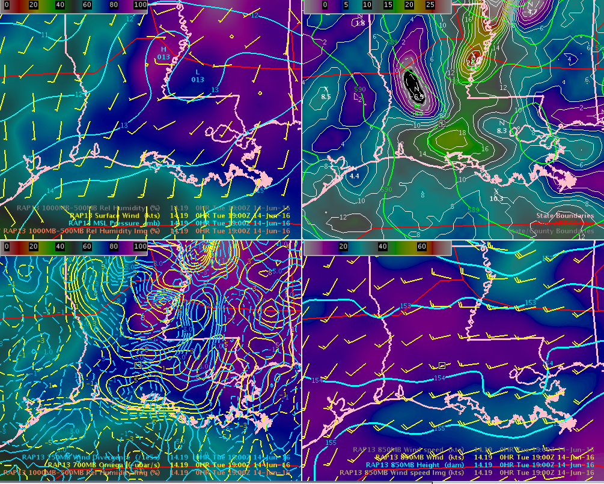

Slide 17

Once again, the other 4 panel of RAP model
RAP13 19Z June 14, 016
Sfc
500
250/700
850
Higher moisture
(1000/500 mb)
Decreasing NVA/
increasing PVA
250 mb divergence/700 mb omega couplets
(large scale ascent)
Higher 850 mb winds will enhance shear. Moisture advection determined by wind orientation